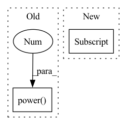

Pattern ID :40167

Before Change
if self.total_round_num > np.sqrt(self.client_num) * L:
scale_d = 2 * self.w_clip * self.nbafl_constant * np.sqrt(
np.power(self.total_round_num, 2) -
np.power(L, 2) * self.client_num) / (
min(self.sample_client_num.values()) * self.client_num *
self.nbafl_epsilon)
for p in global_model.parameters():
After Change
scale_d = 2 * self.w_clip * self.nbafl_constant * np.sqrt(np.power(self.total_round_num, 2) -
np.power(self.sample_client_num, 2) * self.client_num) / (self.sample_client_num * self.client_num * self.nbafl_epsilon)
for k in global_model.keys():
global_model[k] = Gaussian.compute_noise_using_sigma(scale_d, global_model[k].shape)
return global_model
In pattern: SUPERPATTERN
Frequency: 3
Non-data size: 2
Instances
Fragment ID: 114114157
Project Name: fedml-ai/fedml
Commit Name: d51b3d4f98d6d0f89f790463f7072719cfb70fca
Time: 2022-09-13
Author: sshan0731@hotmail.com
File Name: python/fedml/core/dp/frames/NbAFL.py
M Class Name: NbAFL_DP
N Class Name: NbAFL_DP
M Method Name: add_global_noise(2)
N Method Name: add_global_noise(3)
M Parent Class: BaseDPFrame
N Parent Class:
M File Name: python/fedml/core/dp/frames/NbAFL.py
N File Name: python/fedml/core/dp/frames/NbAFL.py
M Start Line: 36
M End Line: 54
N Start Line: 40
N End Line: 50
'>
Before Change
self.anneal_steps = train_config["optimizer"]["anneal_steps"]
self.anneal_rate = train_config["optimizer"]["anneal_rate"]
self.current_step = current_step
self.init_lr = np.power(model_config["model_size"], -0.5)
def step_and_update_lr(self):
self._update_learning_rate()
After Change
self.anneal_steps = train_config["optimizer"]["anneal_steps"]
self.anneal_rate = train_config["optimizer"]["anneal_rate"]
self.current_step = current_step
self.init_lr = train_config["optimizer"]["init_lr"]
def step_and_update_lr(self):
self._update_learning_rate()
'>
Fragment ID: 114114156
Project Name: keonlee9420/parallel-tacotron2
Commit Name: bd75c0f173712ff648502ab90094facda79aa359
Time: 2021-07-25
Author: keonlee9420@gmail.com
File Name: model/optimizer.py
M Class Name: ScheduledOptim
N Class Name: ScheduledOptim
M Method Name: __init__(5)
N Method Name: __init__(5)
M Parent Class:
N Parent Class:
M File Name: model/optimizer.py
N File Name: model/optimizer.py
M Start Line: 20
M End Line: 20
N Start Line: 20
N End Line: 20
'>
Before Change
thresholds_per_channel = np.max(np.abs(tensor_data), axis=tuple(axis_not_channel), keepdims=True)
else:
thresholds_per_channel = np.max(np.abs(tensor_data), keepdims=True)
thresholds_per_channel = np.power(2.0, np.ceil(np.log2(thresholds_per_channel)))
tensor_for_kmeans = int_quantization_with_threshold(tensor_data, thresholds_per_channel, MULTIPLIER_N_BITS)
kmeans.fit(tensor_for_kmeans.reshape(-1, 1))
return {CLUSTER_CENTERS: np.round(kmeans.cluster_centers_),
After Change
kmeans = KMeans(n_clusters=n_clusters)
threshold_selection_tensor = symmetric_selection_tensor if is_symmetric else power_of_two_selection_tensor
thresholds_per_channel = threshold_selection_tensor(tensor_data, p, n_bits, per_channel,
channel_axis, n_iter, min_threshold,
qc.QuantizationErrorMethod.NOCLIPPING)[THRESHOLD]
tensor_for_kmeans = int_quantization_with_threshold(tensor_data, thresholds_per_channel, MULTIPLIER_N_BITS)
kmeans.fit(tensor_for_kmeans.reshape(-1, 1))
'>
Fragment ID: 114114158
Project Name: sony/model_optimization
Commit Name: 6684273eb930b681f8316af3d81d8e8903e48f67
Time: 2022-12-15
Author: 78862769+elad-c@users.noreply.github.com
File Name: model_compression_toolkit/core/common/quantization/quantization_params_generation/lut_kmeans_params.py
M Class Name: AnonimousClass
N Class Name: AnonimousClass
M Method Name: lut_kmeans_tensor(9)
N Method Name: lut_kmeans_tensor(8)
M Parent Class:
N Parent Class:
M File Name: model_compression_toolkit/core/common/quantization/quantization_params_generation/lut_kmeans_params.py
N File Name: model_compression_toolkit/core/common/quantization/quantization_params_generation/lut_kmeans_params.py
M Start Line: 63
M End Line: 69
N Start Line: 40
N End Line: 74